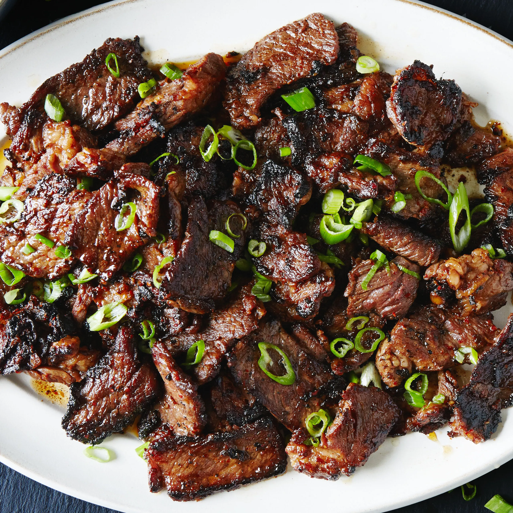

Korean Beef Bulgogi

Food Description
👉 Sweet soy-marinated beef — insanely flavourful and very popular Korean BBQ dish
Food Ingredients:
- 400g thin sliced beef
- 4 tbsp soy sauce
- 2 tbsp sugar or honey
- 1 tbsp sesame oil
- 3 cloves garlic (minced)
- ½ onion (sliced)
- 1 tsp grated pear or apple (optional but authentic)
The Steps:
- Mix all marinade ingredients in bowl.
- Add beef and onion.
- Marinate at least 30 minutes.
- Cook beef in hot pan or grill.
- Cook until caramelised and slightly crispy.
- Serve with rice or lettuce wraps.
Home Page